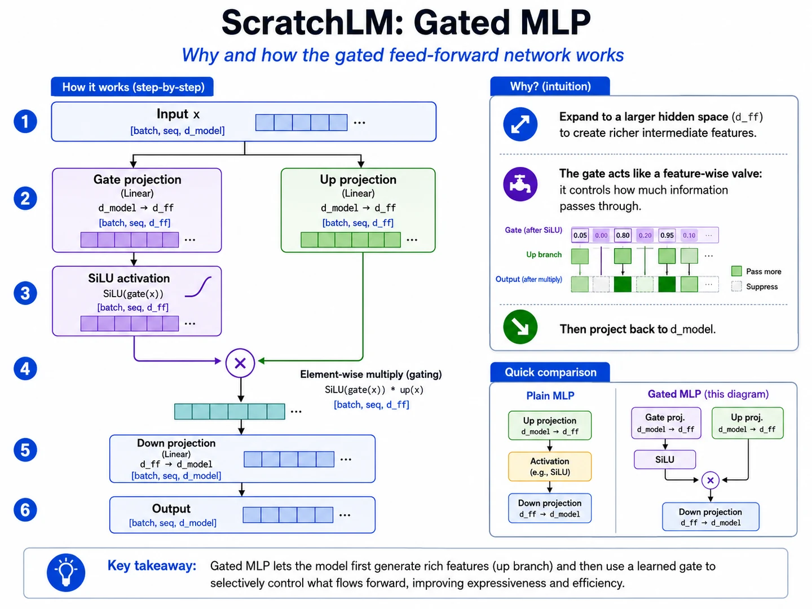

Lesson 22 of 23 · Transformer block
Expand, gate, multiply, project back.
Your win: calculate every branch of a small SwiGLU feed-forward network with actual matrices.
Two parallel projections form a gated hidden vector
The same feed-forward weights are applied separately at every token position. There is no \(T\times T\) token mixing here; attention already performed that role.
Numbers substituted: \(d_{\text{model}}=d_{\text{ff}}=2\)
Let
- Gate projection: \(\mathbf g=\mathbf xW_{\text{gate}}=(1,-1)\).
- Apply SiLU: \(\sigma(1)\approx0.731\), \(\sigma(-1)\approx0.269\), so \(\operatorname{SiLU}(\mathbf g)\approx(0.731,-0.269)\).
- Up projection: \(\mathbf u=\mathbf xW_{\text{up}}=(0,2)\).
- Gate elementwise: \((0.731,-0.269)\odot(0,2)=(0,-0.538)\).
- Project down: \((0,-0.538)W_{\text{down}}=(0,1.076)\).
Therefore \(\operatorname{SwiGLU}(1,-1)\approx(0,1.076)\) for these toy weights.
Trace two numbers through both SwiGLU branches
GATE PATH
UP PATH
The two middle branches have matching widths so their coordinates can multiply one by one.
Why “gate”?
The SiLU branch scales each coordinate of the up branch through elementwise multiplication. A gate near zero suppresses that coordinate; a larger signed gate allows or reverses more of it. The final down projection mixes the gated hidden coordinates back into model width.

Code checkpoint · SwiGLU in two lines
The gate and up projections expand to the same intermediate width. Their elementwise product is then projected back to model width.
Show the feed-forward computation
def forward(self, x):
gate = F.silu(self.gate_proj(x)) # [B, T, Dff]
up = self.up_proj(x) # [B, T, Dff]
gated = gate * up # [B, T, Dff]
return self.down_proj(gated) # [B, T, D]Trace it: Which line restores the width required by the second residual addition?
Engineering bridge · dense FFN first, MoE second
MiniMind keeps the dense SwiGLU as the default path. With use_moe=True, a router scores every flattened token, selects the top \(k\) experts, combines their dense FFN outputs, and records an auxiliary load-balancing loss. The selected experts still return one \(d_{\text{model}}\)-wide update per token.
Show the router's core contract
self.mlp = FeedForward(config) if not config.use_moe else MOEFeedForward(config)
x_flat = x.view(-1, hidden_dim) # [B*T, D]
scores = F.softmax(self.gate(x_flat), dim=-1) # [B*T, E]
topk_weight, topk_idx = torch.topk(
scores, k=self.config.num_experts_per_tok, dim=-1
)
# Dispatch selected rows to expert FFNs, then weighted-sum them back to [B*T, D].Engineering order: verify dense SwiGLU and residual shape invariants first; add routing only after a non-MoE block passes the full-versus-cached decode test.
Retrieval check
What must match before \(\operatorname{SiLU}(\mathbf g)\odot\mathbf u\)?
Practice before moving on
- Calculate \(\sigma(0)\) and \(\operatorname{SiLU}(0)\).
- Calculate \(\operatorname{SiLU}(1)\) to three decimals.
- For gate vector \((0.5,-1)\) after SiLU and up vector \((4,3)\), compute their elementwise product.
- Recompute the worked example's up projection by matrix multiplication.
- If \(d_{\text{model}}=4,d_{\text{ff}}=6\), state the shapes of \(W_{\text{gate}},W_{\text{up}},W_{\text{down}}\) for row-vector notation.
- Explain which sublayer mixes tokens and which transforms tokens independently.
Check solutions
- \(\sigma(0)=0.5\), so \(\operatorname{SiLU}(0)=0\).
- \(1/(1+e^{-1})\approx0.731\).
- \((2,-3)\).
- \((1,-1)\begin{bmatrix}1&1\\1&-1\end{bmatrix}=(0,2)\).
- \(W_{\text{gate}},W_{\text{up}}:4\times6\); \(W_{\text{down}}:6\times4\).
- Self-attention mixes information across token positions; the FFN applies the same feature transformation independently to each token.
Primary sources: Shazeer, GLU Variants Improve Transformer; Touvron et al., LLaMA.